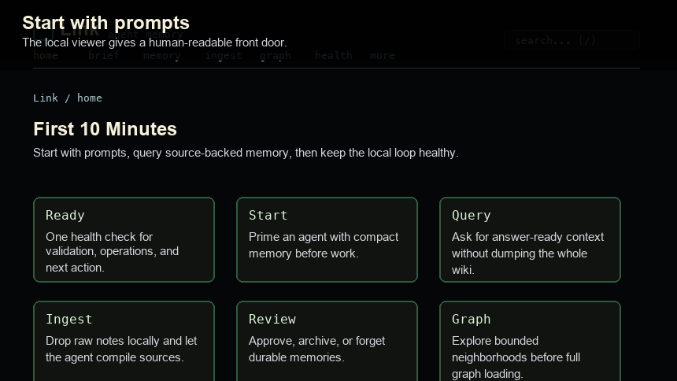
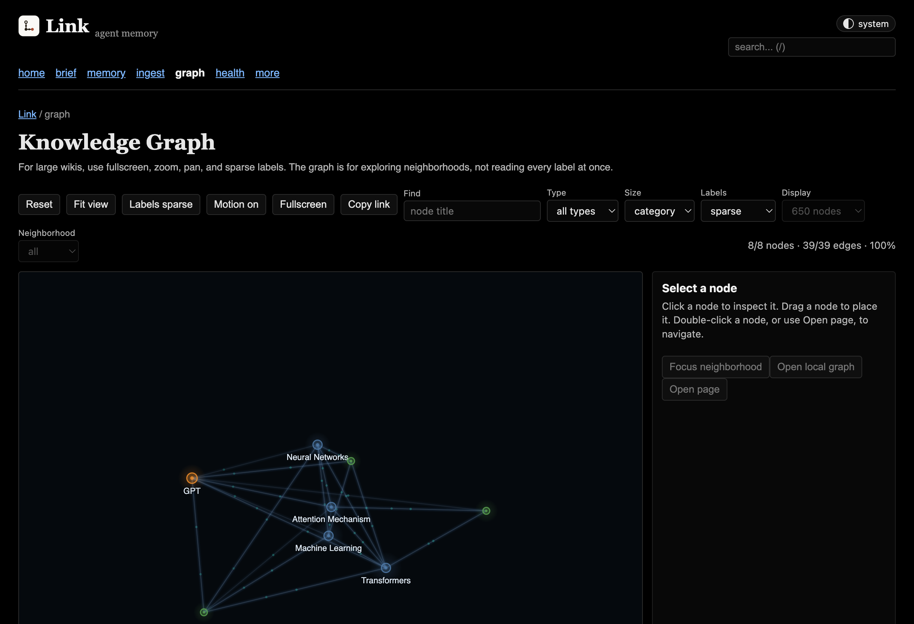
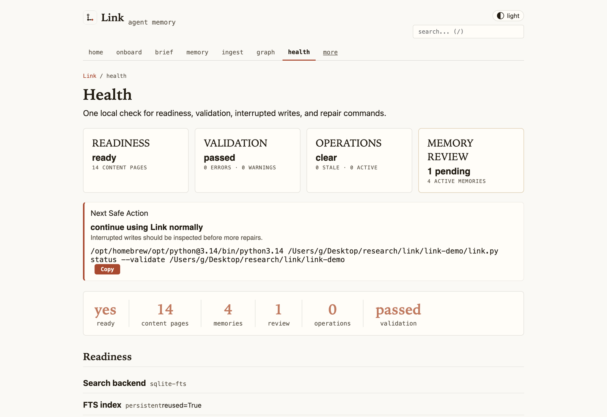

UI Tour

Onboard Checklist
Open /onboard when you want the browser version of lnk onboard. It gathers readiness, project context seeding, first-memory setup, agent wiring, and starter prompts into one copyable checklist so a new user can move from empty local files to working agent memory without memorizing commands.
lnk serve ~/link
open http://127.0.0.1:3000/onboardThe onboard page does not run MCP for you and does not need to stay open. It is a guided local setup screen; CLI commands, official skills, and MCP clients keep working after you close the browser because they read the same local Markdown wiki directly.
Reading Pages
Link's local viewer is document-first. Common paths, including the review inbox, stay in the top navigation; advanced tools live under more, and sectioned wiki pages get a contents outline so long source-backed pages remain scannable. Page footers include related pages from inbound and forward graph links, so reading can continue without opening the full graph.
Catalog And Search
The home page shows recently updated pages so you can resume work quickly. The All Pages catalog groups visible pages by type and includes clickable type chips for narrowing large wikis. Search results use the same page-type grouping and include an in-page refinement form, so a broad query can be narrowed to concepts, sources, memories, or other page types without leaving the local viewer.
Daily Loop
Start from prompts
The home page gives first-run prompts an agent can act on without you memorizing file paths or command syntax.
Check ingest
The ingest view shows pending raw files, represented sources, stale ingests, safety warnings, and post-ingest checks.
Review memory
Use the memory dashboard, inbox, profile, audit, and explain views to keep recall useful instead of mysterious.
Check health
The health page shows readiness, validation, interrupted writes, memory review state, and copyable repair commands.
Validate after writes
Run validation from the CLI or MCP after ingest and broad repairs so dead links, missing sections, and stale graph indexes do not linger.
Review Inbox
The inbox is where memory becomes trusted, so it is built to be fast and to show everything that a review turns on.
- Keyboard. j/k move, r reviews, a archives, x selects, e opens the edit form. Focus moves to the next memory without a reload.
- Inline edit. Change the claim or the visibility in place. The claim goes through
update-memory, so duplicate and conflict checks still run, and nothing is sent unless it changed. - Rules before approval. A memory that carries enforced rules lists them under its claim in the words the hook uses (asks, blocks). Reviewing it activates those rules for the agent's tool calls, so the request must acknowledge the rules it displayed; the server refuses otherwise.
- Bulk review skips rules. Select several memories and review or archive them at once. Memories with enforced rules are skipped and reported, so rules are never switched on in a batch.
- Outside content is marked. On the captures page, proposals from a session that read web pages or MCP tool output say so, so you can check the words are yours before accepting.
The wins page carries a Last session card mirroring lnk receipt: which memories the agent was given, whether every brief arrived whole, how many tool calls the enforced rules asked about or blocked, and how many code reminders fired.
Graph At Scale
The graph opens as a bounded overview on large wikis. Search, legend chips, type filters, and focused neighborhoods can pull from the full graph data without forcing the browser to render every node at once. Large graphs start in deterministic page-type clusters so the first view stays readable.

Health Page
Open /health when the wiki feels wrong. It gathers the same readiness signals as lnk status --validate, plus persistent-cache reuse, interrupted operation markers, and repair commands you can copy back into your terminal or agent chat.

Start It
lnk serve
# from a source checkout
python3 link.py serve link-demoThe server binds to 127.0.0.1 and is intended for local use. Do not expose it to the internet without adding your own authentication layer.
This viewer is optional. CLI commands, official skills, and MCP clients keep working after you close the browser or stop serve.py.